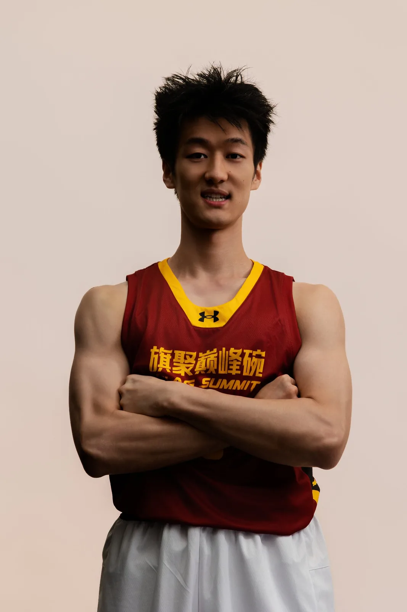

HI, I'M PAN GUANYU.
我是潘冠宇。北大普通生代表队队员、医学队长，全球卫生方向专硕研一。
爱好多一点，生活就多几种打开方式。

PICK A SIDE
五个入口，随意逛逛。
篮球、腰旗橄榄球，与每一次上场。
全球卫生 · 现场调查 · 数据实践
山野、水边，和城市里的光。
一些爱好，几张旧照，和日常。
猫咪，和路遇的小动物。
KEEP IN TOUCH
篮球、运动，还有生活里好玩的事。